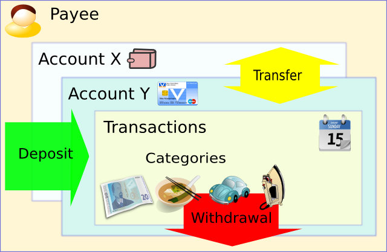

| Languages: | English | German | French | Hungarian | Italian | Polish | Russian | Spanish |
Money Manager Ex (MMEX) es un sistema que modela el mundo financiero real, para ayudar a los usuarios a mantener sus finanzas personales. El software Money Manager EX es de código abierto y de uso gratuito.
El principal objetivo de MMEX es simplificar el proceso de seguimiento de la información financiera, en un programa de fácil uso que se pueda utilizar en cualquier momento, para ayudarnos a llevar un control de dónde viene nuestro dinero, y lo que es más importante, a dónde va, para poder tomar mejores decisiones financieras en el futuro.
Piense en Money Manager Ex como en un talonario de cheques informatizado que le permite cuadrar sus cuentas, organizar, gestionar y generar informes de sus finanzas.
También es una buena manera de mantenerse al tanto de su valor financiero.
El propósito de este manual es proporcionarle algunas instrucciones básicas para operar con MMEX. Este manual de instrucciones evolucionará a medida que lo haga el programa. Por lo que compruebe la ayuda en cada actualización y vea las novedades para poder aprovechar mejor MMEX.
Convertirse en una persona financieramente organizada require un poco de disciplina. La gestión financiera puede tornarse complicada cuando no hay un conocimiento claro de cuanto dinero ingresamos en contraposición a nuestros gastos. Las deudas normalmente llegan cuando nuestro flujo de caja es limitado porque nuestros gastos superan a nuestros ingresos. Entonces necesitamos que nos presten dinero para mantener nuestro flujo de caja y poder adquirir productos necesarios.
El primer paso hacia una mejor salud financiera, es mantener un buen registro de datos financieros. Es entonces cuando tenemos un claro conocimiento de a dónde va nuestro dinero, por lo que podremos tomar una decisión bien fundada de donde recortar nuestros gastos cuando el flujo de caja esté más ajustado. Si necesitamos que nos presten dinero, también podemos gestionar mejor nuestras deudas.
¿Se ha dado cuenta que gastó 600€ en comprar
películas en DVD el año pasado? ¿Cuántas veces las ha visto? ¿Piensa
ahora que esos 600€ hubieran sido mejor invertidos en la avería del
coche que le ocurrió ayer? Por supuesto que no hay una respuesta
correcta o errónea sobre cómo debería gastar su dinero. Después de todo, es
usted quien lo ha ganado y tiene el derecho a gastarlo como le
convenga. Pero siempre puede encontrar una forma de aprovechar mejor el
dinero.
Aquí es donde el software de finanzas personales entra en juego. Le
ayuda a diseccionar los datos financieros para lograr un mejor
entendimiento de lo que está pasando. Recuerde siempre que el software
sólo es tan bueno como los datos que procesa. Si entra basura, sale
basura. Pero si ha empezado a pensar en usar software financiero, está
en el buen camino para hacer que cada moneda cuente.
Lea como trabajar con Money Manager Ex.
Money Manager EX modela el mundo real para ayudarnos a mantener nuestras finanzas personales.
Generalmente recibimos dinero de alguien por proporcionarle un servicio o un producto que vendamos. El sistema considera esto como un ingreso o un abono. Cuando adquirimos un artículo o usamos un servicio, el dinero que gastamos se considera un gasto o un cargo. En MMEX, la gente que nos da dinero o que recibe nuestro dinero se consideran beneficiarios.
Como es de esperar no gastar todo el dinero que recibimos, obviamente se necesita un lugar para guardar nuestro dinero. Esto es, por lo general, alguna entidad financiera, o varias, o nuestro bolsillo. MMEX etiqueta estos lugares como cuentas.
Cuando gastamos o recibimos dinero, lo vemos como una transacción, y el motivo del ingreso o gasto es la categoría. Habrá veces que será necesario transferir dinero de un lugar a otro, como retirar dinero de un cajero, y este tipo de transacción se conoce como transferencia.
|
Esto se puede simplificar como muestra el siguiente diagrama: |
 |
Algo importante a considerar es la moneda que se utiliza para efectuar las transacciones.
MMEX utiliza una base de datos para almacenar y conectar todas estas entidades entre sí y poder realizar un seguimiento.
La base de datos que genera MMEX, conocida como fichero .mmb, se convierte en un fichero importante de mantener. Dependiendo de las circunstancias, se pueden emplear características de seguridad, como el cifrado, que se reconoce como un fichero .emb. En este punto podemos asociar una contraseña a la base de datos, que se solicitará cada vez que se abra MMEX.
Cuando cifre su base de datos, no olvide la contraseña.
Como en cualquier sistema informatizado, los datos que se producen son importantes para nosotros, y por lo tanto es necesario protegerlos contra un error de funcionamiento del sistema. MMEX posee un sistema de copia de seguridad con el que puede generar una copia cuando se abre la base de datos, y actualizar la copia diaria si se abre más de una vez al día.
Realice regularmente una copia de seguridad de su fichero de base de datos .mmb o .emb.
Mantenga sus copias de seguridad en otros dispositivos para protegerlos de un fallo hardware.
Antes de actualizar a una nueva versión de MMEX, asegúrese de realizar una copia de seguridad de su fichero .mmb o .emb.
Cuando se inicia MMEX, intentará cargar la última base datos que fue abierta. Si no existe esa base de datos, al usuario se le presenta la opción de abrir una base datos existente o crear una nueva.
Si necesita crear un nuevo fichero de base de datos, seleccione el menú Archivo->Nueva base de datos.
Se le pedirá especificar un nombre para el fichero .mmb de la base de datos en la ubicación que indique. Una vez creado el nuevo fichero de base de datos se mostrará un asistente para ayudarle a inicializar la base de datos y crear su primera cuenta.
El asistente para crear una nueva base de datos le pedirá que especifique una Moneda base y un Nombre de usuario.
MMEX viene con un conjunto de divisas predeterminadas, para que pueda usar la que corresponda con las características de la moneda de su país. Las nuevas cuentas utilizarán esta configuración de Moneda base por defecto. Esto permite que las cuentas de diferentes países reflejen sus valores en la moneda base.
Para ayudar a identificar el propósito de la base de datos, se pide rellenar un Nombre de usuario. Es opcional, y sólo se utiliza como título en la página de inicial y en los informes.
Ambas configuraciones se pueden cambiar en cualquier momento seleccionando el menú: Herramientas->Opciones
El nombre de la base de
datos se mostrará en la
barra de título para ayudarle a recordar qué fichero de base de datos
está abierto.
El nuevo
fichero .mmb de base de datos no está cifrado.
La base de datos se puede cifrar de la siguiente manera: en el menú, seleccione Archivo->Guardar base de datos como
Seleccione su ubicación y el fichero .mmb, o cree un nuevo nombre para su base de datos.
Cambie el Tipo: a Encrypted MMB Files (*.emb). Después pulse Guardar.
Introduzca una contraseña para el fichero – La necesitará cuando abra la base de datos.
Consejos:
Recuerde hacer copias de seguridad del fichero .mmb o .emb de la base de datos.
El fichero de base de datos no
está cifrado:
Eso
significa que cualquiera que tenga conocimientos puede abrir el fichero
y leer su contenido. Así que asegúrese que si está almacenando
información financiera sensible, se guarda debidamente.
Para bases de datos cifradas: Recuerde su contraseña.
Al crear un nuevo fichero de base de datos, automáticamente se le pedirá que cree una nueva cuenta.
Para crear un nueva cuenta manualmente, seleccione el menú Cuentas->Nueva cuenta.
Esto abrirá el asistente para añadir una cuenta, el cual le guiará a través del proceso de asignar un nombre y un tipo de cuenta. El tipo de cuenta no se puede cambiar, pero el nombre se puede cambiar al editar la información de la cuenta.
Nombre de la cuenta: Es un campo obligatorio. Se recomienda que nombre a sus cuentas de forma única y que tenga relación con las cuentas reales. Ejemplo: Con CitiBank, tenemos una cuenta de ahorro y una tarjeta de crédito Visa. Podría nombrar a sus cuenta como "CitiBank Ahorro" y “Citibank Visa”.
Tipo de cuenta: MMEX actualmente dispone de tres tipos de cuenta:
Cuenta "Corriente”: Es el tipo de cuenta más utilizada por MMEX, y permite gestionar los tipos de cuenta más comunes, como cuentas corrientes, de ahorro, y de tarjeta de crédito. También se conoce como cuenta bancaria, y permite tres tipos de transacciones: cargos, abonos y transferencias.
Cuenta "A plazo”:
Similar a las cuentas corrientes excepto que
aparecen en su propia sección de la página de inicio y se pueden
mostrar u ocultar cuando sea necesario. Para una explicación más detallada
vea el
ejemplo de configuración de cuenta.
Este tipo de cuentas cubren cuentas especializadas como depósitos a
plazo, hipotecas, préstamos o inversiones, con ingresos y gastos de los
que necesita llevar un control. Estas cuentas tienen su propio resumen
en la página de inicio. También permiten tres tipos de transacciones.
Cuenta de "Inversión: El otro tipo de cuenta que permite MMEX son cuentas de "Inversión". Este tipo de cuenta le permite llevar un seguimiento de sus acciones, bonos y fondos de inversión u otro tipo de inversiones que tenga.
Para configurar correctamente las cuentas, debería tener información del saldo de las cuentas que quiera añadir a MMEX. Puede obtener esta información del último extracto de su cuenta bancaria, inversión o tarjeta de crédito. Para tener información adicional sobre la cuenta, de forma opcional puede introducir otros detalles, como el número de cuenta, página web, e información de contacto y acceso. También puede introducir notas adicionales sore la cuenta en el campo correspondiente.
La mayoría de cuentas tienen un determinado saldo, por ejemplo, en una tarjeta de crédito puede tener un saldo actual de 2304,67 €, el cual podría poner en el campo saldo inicial. De ahí en adelante sólo tendría que añadir las transacciones a partir de la fecha de ese saldo.
El estado de la cuenta
puede ser "Abierta" o "Cerrada".
Las cuentas cerrodas simplemente son eso. Ya no están activas.
Seleccionar este estado es sólo una forma ordenar la vista del árbol de
navegación. Los ajustes permanentes se realizan en las opciones de
vista del menú, Herramientas->Opciones, donde puede ocultar las
cuentas cerradas. Vea consejos del árbol de navegación.
Moneda: Está
inicialmente fijada a la moneda base que se configuró al crear la
base de datos. Puede seleccionar la moneda que está asociada con la
cuenta y puede ser diferente de la moneda base. La tasa de cambio de la moneda se puede cambiar mediante el menú: Herramientas
->Organizar divisas.
Ejemplo: Vive en EE.UU. y utiliza dólares, y tiene una cuenta en un banco italiano que utiliza euros. La mayoría de sus cuentas están en dólares. ¿Cuál es el valor real de su cuenta italiana? Cambiando la tasa de cambio del euro italiano, puede obtener el valor correcto de sus cuentas.
También puede marcar sus cuentas como 'Favoritas'. Esto también se utiliza para cambiar las cuentas que son visibles en la barra de navegación. Vea consejos del árbol de navegación.
Consejos:
Utilice el icono de la barra de herramientas para abrir rápidamente el asistente para añadir una cuenta.
Tenemos una cuenta de ahorro con 1.250€,
una cuenta corriente con 500€, una MasterCard que
adeuda 250€, una Visa adeudando 475€, una hipoteca
de 230.965€ y un fondo de estudios para enviar a los niños a la
universidad en el futuro actualmente de 5000€ ganando interés.
Configuraríamos las siguientes cuentas:
|
Tipo de cuenta |
Nombre de la cuenta |
Saldo inicial |
|
Corriente/Ahorro |
Ahorros |
1.250,00€ |
|
|
Corriente |
500,00€ |
|
|
MasterCard |
-250,00€ |
|
|
Visa |
-475,00€ |
|
A plazo |
Hipoteca |
-230.965,00€ |
|
|
Fondo de estudios |
5.000,00€ |
En la página de inicio los saldos serían
de 1.025€ para las cuentas bancarias, y de -225.965€ para las
cuentas a plazo.
Cuando se realiza un pago de su cuenta de ahorros a la de MasterCard con una transferencia, el saldo en la página de inicio permanece inalterado. Cuando el pago se realiza de sus ahorros a la hipoteca, éste se verá reflejado en el saldo en la página de inicio. Ahora puede determinar la cantidad de dinero que tiene día a día. Los pagos regulares también se pueden configurar de su cuenta de ahorros a la de su hipoteca mediante transacciones periódicas.
Según se van creando más cuentas el árbol de navegación y la página de inicio se pueden volver muy grandes.
Estas vistas se pueden cambiar temporalmente para mostrar u ocultar las secciones necesarias:
|
Árbol de navegación: |
Expanda/Contraiga las ramas de cuentas bancarias y a plazo mediante los nodos +/- del árbol |
|
Página de inicio: |
Mediante el menú: Ver ->Cuentas bancarias y/o el menú: Ver ->Cuentas a plazo |
Al utilizar el botón derecho sobre:
Cuentas bancarias en el árbol de navegación, permitirá mostrar todas las cuentas o sólo las favoritas de forma temporal, así como otras opciones útiles.
Cualquier cuenta bancaria o a plazo, para acceder a otras opciones de utilidad.
Para hacer los cambios permanentes, cambie las opciones en el menú: Herramientas ->Opciones -->Opciones de vista.
Una vez que ha creado una cuenta, puede editar la información de cualquier campo de las siguientes maneras:
Mediante el menú Cuentas
–> Editar cuenta
Se mostrará la lista de cuentas donde se seleccionará la cuenta deseada.
Seleccionando el nombre
de la cuenta en el panel de navegación
Botón derecho para que aparezca el menú emergente y
seleccionar "Editar
cuenta"
Esto llevará a la ventana de información de cuenta donde se pueden cambiar los campos que desee.
Edite los detalles de la cuenta.
Utilice el botón "Aceptar" para guardar la información de la cuenta.
Una vez creada una nueva cuenta, selecciónela en el árbol de navegación. Es entonces cuando la cuenta se muestra en la ventana principal donde se puede empezar a crear transacciones:
Utilizando el botón "Nuevo" situado en la parte inferior de la pantalla,
En el árbol de navegación, seleccione la cuenta deseada.
Esto abre el registro de transacciones asociado
a la cuenta. Para crear una nueva transacción, haga clic en el botón
"Nuevo" para abrir la ventana de Nueva/Editar Transacción. Introduzca
los detalles de la transacción. Comience seleccionando el tipo de
transacción entre "cargo", "abono" o "transferencia". Después
seleccione el beneficiario, la categoría, la fecha, número, si quiere
añadir alguna nota, y finalmente el importe de la transacción. Pulse el
botón "Aceptar" para guardar la transacción.
Aquí se describen los campos asociados a la ventana de transacción.
Cargo: se realiza un pago y es un gasto.
Abono: se recibe dinero y es un ingreso.
Transferencia:
se realiza un cargo en una cuenta y un abono en otra.
Este tipo de transacción no se incluye en los cáculos de ingresos/gastos.
Las transferencias habilitan el botón Avanzado. Se
utiliza en las situaciones en las que es necesario que el importe
cargado en la cuenta "origen", sea diferente del abonado en la cuenta
"destino" o viceversa.
(Por eso es avanzado.) Cuando las cantidades difieren aparece el texto “¡activo!” junto al botón “Avanzado”.
Beneficiario: Es la persona u organización a la que va o de la que viene el dinero.
Haciendo clic en el botón de beneficiario se abre la ventana de beneficiarios. Puede seleccionar el beneficiario desde esa ventana o crear uno nuevo.
Categoría: Selecciona el tipo de ingreso o gasto de la transacción.
Haciendo clic en el botoón de categoría se abre la ventana de categorías. Puede seleccionar la categoría desde esa ventana o crear una nueva.
Número de transacción: es un campo reservado para introducir cualquier número asociado con la transacción.
Estado de la transacción: Seleccione las opciones "no reconciliada", "reconciliada", "nula",
"seguimiento". Esto marca la transacción con uno de estos estados.
No reconciliada: Cuando introduce una transacción, inicialmente está "no reconciliada". Esto quiere decir que no ha sido reconciliada con el saldo de su banco o tarjeta de crédito.
Reconciliada: Una vez que la transacción se ha comprobado y verificado con la información de saldo del banco, se puede marcar como reconciliada.
Nula: Si introduce una transacción que más tarde se invalida o cancela por algún motivo, en lugar de eliminarla puede marcarla como nula, para así poder tener un registro de la transacción.
Marcar para segumiento: Este estado marca las transacciones como pendientes de algo. Por ejemplo, recibe un extracto de saldo de su entidad financiera y se da cuenta que el importe de la transacción es diferente del que ha registrado. Puede marcarla para seguimiento hasta que lo aclare con el banco.
La edición de transacciones existentes se puede realizar de varias formas:
seleccione la transacción y haga clic en el botón de editar.
haga doble clic sobre la transacción seleccionada.
presione intro sobre la selección.
Cualquiera de estas acciones abrirá la ventana de transacción que contiene los detalles de la transacción seleccionada. Realice los cambios y pulse "Aceptar" para guardarlos.
El botón “Avanzado”
Se activa cuando se utiliza una transacción de tipo transferencia.
Se muestra el texto “¡activo!” para indicar que se está utilizando.
Se muestra junto al botón "Avanzado" cuando el valor de la “cuenta destino” es diferente al campo importe, (cuenta origen).
Las transacciones introducidas en MMEX se consideran no reconciliadas. Esto significa que no se han verificado con el extracto de la entidad financiera. Una vez que se recibe el extracto o se consulta online la transacción se puede considerar reconciliada si coincide con la información de la entidad financiera. Entonces es cuando la transacción se puede marcar como reconciliada. Marcándolas así puede llevar un seguimiento de las transacciones que coinciden con las transacciones reales. En MMEX, las transacciones reconciliadas y no reconciliadas se muestran con iconos diferentes.
Consejo: Para marcar una transacción como reconciliada, simplemente selecciónela y pulse la tecla 'r' o 'R'. Para marcarla como no reconciliada, pulse 'u' o 'U'.
Algunas transacciones pueden estar relacionadas con temas sobre los que quiera realizar un seguimiento. Márquelas mediante el estado "marcar para seguimiento". Esto se indica en MMEX con un icono diferente.
Consejo:
Para marcar una transacción para seguimiento, selecciónela y pulse la tecla 'f o 'F'.
Ya que MMEX se puede usar en muchos países, tiene que tener en cuenta la moneda del país. Cuando se crea una nueva base de datos, se configura la Moneda base como la moneda para el país del usuario. Si la configuración de moneda no está en la lista de divisas predeterminada, el usuario puede crear las suyas propias.
MMEX también nos permite trabajar con más de una moneda si es necesario. Si es así, se muestra un resumen de las divisas utilizadas en la página de inicio.
Puede gestionar la divisas mediante el menú: Herramientas -> Organizar divisas.
Para añadir una nueva divisa:
Utilice el botón Añadir en la ventana de divisas.
Proporcione un nombre adecuado para la nueva divisa.
Nota: Este nombre no se puede cambiar, pero la divisa se puede eliminar si no se utiliza.
Ajuste los valores de la divisa en el Gestor de divisas.
El gestor de divisas también está disponible al editar una divisa.
Utilice el botón Actualizar
para guardar los cambios antes de cerrar.
Nota: Todos los cambios se perderán si no utiliza el botón actualizar antes de cerrar.
Cuando se utiliza más de una divisa, es necesario configurar la Conversión a tasa base para permitir que el valor de la divisa se refleje correctamente. Para permitir la actualización automática de divisas, es necesario configurar la Representación de la moneda para la divisa en uso.
Para usar el menú: Herramientas –> Actualización online del tipo de cambio, se debe realizar lo siguiente:
Activar la opción de Herramientas –> Opciones... Otros.
Configurar la representación de la moneda de todas las divisas que tengan que actualizarse.
Configurar el valor de la moneda base a 1.
Consejos:
Utilize el icono de la barra de herramientas para acceder rápidamente a la ventana de organizar divisas.
Utilice las teclas arriba/abajo para moverse entre las divisas.
Las categorías indican el motivo por el que se realiza un pago o por el que se recibe un ingreso.
Ejemplo: Si queremos reflejar la reparación de nuestro coche, podemos escoger la categoría: Automóvil, y la subcategoría: Mantenimiento.
Puede gestionar las categorías mediante el menú: Herramientas
-> Organizar categorías.
Una vez abierta la ventana, puede añadir nuevas categorías y subcategorías.
Para añadir una nueva categoría:
Seleccione Categorías en la raíz del árbol (en la parte superior),
teclee el nombre de la nueva categoría en el campo de texto.
Pulse el botón Añadir.
La nueva categoría aparecerá al final, y se reordenará cuando se vuelva a abrir la ventana de categorías.
Para añadir una nueva subcategoría:
Seleccione la categoría a la que quiera que pertenezca la subcategoría
teclee el nombre de la nueva subcategoría en el campo de texto
Pulse el botón Añadir.
También puede cambiar los nombres seleccionando la categoría/subcategoría en la lista, modifique el nombre en el campo de texto y pulse el botón Editar. Puede borrar la categoría/subcategoría de una manera similar.
Nota: No puede borrar categorías que estén en uso por alguna transacción.
Asegúrese de que ninguna transacción utilice esa combinación de categoría/subcategoría. Puede hacerlo de varias maneras:
Editando la transacción y cambiando la categoría/subcategoría.
Borrando la transacción que utilice esa categoría/subcategoría.
Mediante el menú: Herramientas –> Reorganización de... Categorías, donde puede mover todas las categorías con un determinado nombre a otra combinación de categoría/subcategoría.
Esto liberaría la categoría para que pueda ser borrada.
Consejos:
Utilice el icono de la barra de herramientas para abrir rápidamente la ventana para organizar categorías
Utilice las teclas arriba/abajo para moverse entre las categorías.
Los beneficiarios
son personas o instituciones de las que recibimos dinero, o
las personas o instituciones a las que pagamos, a cambio de bienes o
servicios.
Puede gestionar los beneficiarios mediante el menú: Herramientas –> Organizar beneficiarios.
Una vez abierta la ventana puede añadir, editar o borrar beneficiarios.
Para añadir un nuevo beneficiario:
Introduzca el nombre del beneficiario en el campo "Filtrar beneficiarios"
Pulse el botón "Añadir"
También puede seleccionar el beneficiario de la lista y usar el botón "Editar" o "Borrar" para realizar la acción deseada.
Nota: No puede borrar los beneficiarios que estén en uso por alguna transacción.
Para borrar un beneficiario, asegúrese de que no está en uso por ninguna transacción. Puede hacerlo de varias maneras:
Editando la transacción y cambiando el beneficiario.
Borrando la transacción que utilice ese beneficiario.
Mediante el menú: Herramientas –> Reorganización de... Beneficiarios, donde puede mover todos los beneficiarios con un determinado nombre a otro diferente.
Esto liberaría el beneficiario para que pueda ser borrado.
Consejos:
Utilice en icono de la barra de herramientas para abrir rápidamente la ventana para organizar beneficiarios.
Utilice las teclas arriba/abajo para moverse entre los beneficiarios.
Utilice el símbolo * como comodín para sustituir varios caracteres en el filtro.
Utilice el símbolo ? para sustituir un único carácter en el filtro.
MMEX puede importar de una
amplia variedad de
formatos. Uno de ellos es el fichero CSV de formato fijo. Este formato
de fichero coincide exáctamente con el formato CSV que MMEX puede
exportar. Así que puede ser útil para mover datos de una base de datos
.mmb a otra. Para ver fácilmente el formato del fichero CSV, puede
probar exportando una cuenta a CSV y analizar el fichero creado.
El formato general es como sigue:
Fecha -
Fecha de la transacción (mostrado en el formato especificado en
Opciones->Formato de fecha).
Beneficiario
- A quien se realiza la transacción. En el caso de una transferencia,
indica el nombre de la cuenta de la que se hace o a la que se hace.
Tipo de transacción
- Puede ser tanto un "cargo"
como un
"abono".
Cantidad
- El importe de la transacción como un valor positivo.
Categoría - La categoría de la
transacción.
Subcategoría - La subcategoría de
la transacción si existe alguna (en caso contrario en blanco).
Número - Número de la transacción.
Notas - Notas de la transacción.
Tenga en cuenta que las transacciones de un fichero CSV sólo se pueden
importar a una única cuenta de MMEX.
Quicken Interchange Format
(QIF) es una especificación abierta que permite leer y escribir
datos financieros a diferentes medios (p.e. ficheros). Un fichero QIF
suele tener la siguiente estructura:
!Type:identificador de tipo
[código de un único carácter]Datos de la cadena
...
^
[código de un único carácter]Datos de la cadena
...
^
Cada registro termina con un ^ (acento circunflejo).
Vea una transacción QIF de ejemplo
!Type:Bank Cabecera
D6/ 1/94 Fecha
T-1,000.00 Importe
N1005 numero
PBank Of Mortgage Beneficiario
^ Fin de transacción
QIF es más antiguo que Open Financial Exchange
(OFX). La imposibilidad de reconciliar las transacciones importadas
contra la información actual de la cuenta es una de las principales
deficiencias de QIF. Normalmente lo ofrecen entidades financieras para
proporcionar información descargable a los titulares de las cuentas.
MMEX puede importar transacciones de tipos de QIF específicos a una cuenta.
Los tipos son los siguientes: (Puede averiguar el tipo de QIF abriéndolo en un editor de texto)
!Type:Bank Transacciones de cuentas bancarias
!Type:Cash Transacciones de cuentas de efectivo
!Type:CCard Transacciones de cuentas de tarjeta de crédito
Nota importante (1): La opción de formato de fecha tiene que
coincidir con el formato de fecha del fichero QIF, de lo contrario las
transacciones tendrían fechas incorrectas.
Nota importante (2):
Después de importar de QIF, todas las transacciones estarán marcadas
como "Seguimiento". Puede marcar todas las transacciones de este tipo
mediante las opciones del menú al hacer clic derecho en la vista de
cuenta.
MMEX también puede importar
de ficheros CSV que
se hayan exportado con el programa Money Manager.NET. Principalmente
para ayudar a los usuarios de ese programa a migrar a MMEX.
El formato general es
como sigue:
Fecha
- Fecha de la transacción (mostrado
en el formato especificado en Opciones->Formato de fecha).
Beneficiario -
A quien se realiza la transacción. En el caso de una transferencia,
indica el nombre de la cuenta de la que se hace o a la que se hace.
Cantidad - El importe de la transacción. Si es
positivo, se considera un abono, si es negativo, un cargo.
Número - Número de la transacción.
Estado
- Estado de la transacción.
Categoría - La categoría de la transacción. Realmente
es una cadena compuesta del tipo "Categoría:Subcategoría"
Notas
- Notas de la transacción.
Tenga en cuenta que las
transacciones de un fichero CSV sólo se pueden importar a una única
cuenta de MMEX.
Para mitigar el problema de que los usuarios
tengan que cambiar el formato de sus ficheros CSV de transacciones
bancarias al formato fijo que necesita MMEX, también se permite a los
usuarios importar ficheros CSV donde el orden de los campos es
completamente libre. Para hacer esto, seleccione la cuenta a la que
quiere importar y después elija el orden de los campos del fichero CSV
escogiendo de la lista de campos disponibles. MMEX importará el fichero
CSV utilizando la información de formato especificada por el
usuario. MMEX puede importar de una
amplia variedad de
formatos. Uno de ellos es el fichero CSV de formato fijo. Este formato
de fichero coincide exáctamente con el formato CSV que MMEX puede
exportar. Así que puede ser útil para mover datos de una base de datos
.mmb a otra. Para ver fácilmente el formato del fichero CSV, puede
probar exportando una cuenta a CSV y analizar el fichero creado.
Las opciones de campos CSV son las siguientes:
Fecha - La fecha de la transacción (en el formato especificado en Opciones->Formato de fecha)
Beneficiario - A quien se realiza la transacción. En el caso de una transferencia,
indica el nombre de la cuenta de la que se hace o a la que se hace.
Cantidad (+/-) - El importe de la transacción. Si es
positivo, se considera un abono, si es negativo, un cargo.
Categoría - La categoría de la transacción.
Subcategoría - La subcategoría de
la transacción.
Notas - Notas de la transacción.
Número - Número de la transacción.
Cargo - Un importe positivo que se considera un cargo. (No utilizar si se especifica cantidad (+/-))
Abono - Un importe positivo que se considera un abono. (No utilizar si se especifica cantidad
(+/-))
Sin importancia - Ignorar este campo.
Tenga en cuenta que las
transacciones de un fichero CSV sólo se pueden importar a una única
cuenta de MMEX.
Nota importante (1): La opción de formato de fecha tiene que
coincidir con el formato de fecha del fichero QIF, de lo contrario las
transacciones tendrían fechas incorrectas.
Nota importante (2):
Después de importar de QIF, todas las transacciones estarán marcadas
como "Seguimiento". Puede marcar todas las transacciones de este tipo
mediante las opciones del menú al hacer clic derecho en la vista de
cuenta.
Cuando cree un fichero CSV asegúrese que elimina las comas de sus cargos y abonos. Esto se puede realizar fácilmente a través de programas como Excel u OpenOffice Calc.
O puede cambiar el delimitador a utilizar mediante Herramientas –> Opciones y cambiando las preferencias de importar/exportar en el panel "General".
No necesita incluir valores de saldo en el fichero CSV.
Tenga en cuenta que las transacciones de un fichero CSV sólo se pueden importar a una única cuenta de MMEX.
MMEX puede exportar a un
fichero CSV de formato
fijo. Este formato de fichero coincide exáctamente con el formato CSV
que MMEX puede importar. Así que puede ser útil para mover datos de una
base de datos .mmb a otra. Para ver fácilmente el formato del fichero
CSV, puede probar exportando una cuenta a CSV y analizar el fichero
creado.
El formato general es como sigue:
Fecha - Fecha de la transacción
(mostrado en el formato especificado en Opciones->Formato de
fecha).
Beneficiario
- A quien se realiza la transacción. En el caso de una transferencia,
indica el nombre de la cuenta de la que se hace o a la que se hace.
Tipo de transacción -
Puede ser tanto un "cargo" como un "abono".
Cantidad - El importe
de la transacción como un valor positivo.
Categoría - La categoría
de la transacción.
Subcategoría - La
subcategoría de la transacción si existe alguna (en caso contrario en
blanco).
Notas - Notas de la transacción.
Tenga en cuenta que las
transacciones de una cuenta se pueden importar a un único fichero CSV.
MMEX puede exportar una cuenta a un fichero con formato QIF.
MMEX también puede usar este formato para recargar en una cuenta.
Precaución: Aunque las transferencias se recargarán en una sola cuenta, no funcionarán correctamente.
Cuando tenemos transacciones que se realizan en intervalos regulares, como el pago de facturas, MMEX nos permite configurarlas como transacciones periódicas. Estas transacciones:
Se muestran como recordatorios en la página inicial 14 días antes de la fecha de vencimiento.
Se pueden configurar para que se activen automáticamente en la fecha de vencimiento.
Se pueden configurar para que se activen permitiendo al usuario ajustar cualquier valor en la fecha de vencimiento.
Se accede seleccionando Transacciones periódicas en el árbol de navegación.
Para crear nuevas transacciones, utilice el botón Nuevo.
Especifique la cuenta.
Similar a crear una nueva cuenta excepto que necesitamos asociar las transacciones con una cuenta, ya que necesita conocer la cuenta sobre la que opera.
Fije la Siguiente ocurrencia a alguna fecha futura.
Seleccione si se repite “diariamente”, “semanalmente”, etc.
Veces repetido:
-
Introduzca el número de veces que se repite.
- Dejarlo en blanco significa indefinidamente.
Esta transacciones se muestran como Próximas transacciones en la página de inicio los 15 días anteriores a la fecha de vencimiento.
Nota:
Cuando efectuamos la transacción, podemos cambiar el importe, el beneficiario, la categoría, el estado y la fecha si es necesario.
Efectuar una transacción antes de su vencimiento hará que se muestre en tono gris en la cuenta asociada hasta el día que se vuelva activa.
Para utilizar los informes de flujo de caja es necesario configurar transacciones periódicas.
MMEX permite mantener activos fijos, como coches, casas, terrenos y demás. Cada activo puede tener su valor de apreciación o depreciación por un cierto índice al año, o no cambiar nada. Todos los activos se añaden al valor financiero total.
MMEX le permite buscar transacciones que cumplan ciertos criterios. Para ello puede utilizar la opción de filtro de transacciones. La lista de transacciones resultante se puede imprimir o guardar como un fichero HTML.
MMEX le permite configurar
un presupuesto anual
y compararlo con sus gastos. Para configurar un presupuesto haga clic
en la opción 'Presupuestos' del árbol de navegación y añada un
presupuesto anual. Una vez que se ha añadido el año, selecciónelo y
edite las cantidades de cada categoría.
Esto se convierte en el presupuesto para ese año.
Mediante los informes de 'Presupuestos' es posible comparar cómo se ha
gastado el dinero con respecto al presupuesto.
MMEX permite una gran
variedad de informes.
Todos los informes se pueden imprimir mediante el menú: Archivo->Imprimir...
-->Vista actual
Seleccione el informe deseado bajo el nodo "Informes" del árbol del navegación. Algunos informes necesitan de la introducción de datos por parte del usuario, otros no. Una vez que se muestra el informe, puede imprimirlo mediante las opciones de impresión del menú.
Informes de año fiscal: (Necesario para algunos países)
Son informes que generalmente no comienzan al inicio del año de calendario, y aparecen como ramas del informe principal. Estos informes cubren:
Año fiscal anterior.
Periodos del año fiscal actual.
Por defecto el inicio del año fiscal es el 1 de julio.
La fecha de inicio se puede modificar por cualquier día de cualquier mes, dentro de un periodo de 12 meses mediante Herramientas ->Opciones y después seleccionando Otros.
Permite al usuario generar informes específicos con unos determinados criterios.
También denominado filtro de transacciones.
Para que funcione correctamente las transacciones periódicas tienen que estar configuradas para las cuentas. El informe utilizará esta información para reflejar los meses de los próximos 10 años y predecir la cantidad de dinero que estará disponible cada mes futuro.
MMEX permite imprimir todos los informes que se pueden generar.
Las opciones de impresión se encuentran bajo el menú, Archivo->Imprimir... Vista actual
Recomendaciones:
Utilice la opción de configurar página para realizar cambios en el formato si lo considera necesario.
Utilice la opción de vista preliminar para comprobar la disposición del informe antes de imprimirlo.
Puede modificar el comportamiento de MMEX cambiando algunos ajustes de la ventana de opciones.
Se accede desde el menú Herramientas->Opciones
|
Panel General |
|
|
Moneda base: |
Se utiliza para seleccionar la moneda de la base de datos. Cada cuenta la usará por defecto, pero se puede modificar si son necesarias otras divisas. |
|
Formato de fecha: |
Se utiliza para controlar cómo se muestran las fechas y también cómo analizarlas al importar de ficheros QIF y CSV. |
|
Delimitador CSV |
Se utiliza como carácter delimitador de los ficheros CSV. Es útil para modificar el carácter predeterminado ',' cuando hay que tratar con divisas que utilizan ',' como carácter decimal en las cantidades. |
|
Nombre de usuario |
Opcional Este campo sólo se utiliza como título en la página de inicio y en los informes. |
|
Idioma |
Es el idioma que utiliza la interfaz de MMEX. MMEX puede necesitar un reinicio para que se aplique el nuevo idioma a todos los elementos. |
|
Panel Opciones de vista |
|
|
Cuentas visibles |
Indica las cuentas visibles en el árbol de navegación dependiendo de su estado. |
|
Transacciones visibles |
Determina las transacciones que son visibles por defecto en la vista de cuenta. |
|
Tamaño de fuente |
Indica la fuente que se usará en la página de inicio y los informes. |
|
Expandir sección de vista en árbol |
Selecciona los tipos de cuenta que aparecerán expandidos cuando se refresque el árbol de navegación. |
|
Expandir sección de página de inicio |
Selecciona los tipos de cuenta que aparecerán expandidos cuando se refresque página de inicio. |
|
|
|
|
Panel Colores |
Permite al usuario modificar los colores de MMEX para adaptarlos a su gusto. |
|
Panel Otros |
|
|
Preferencias del año fiscal |
Selecciona un día y un mes de inicio para un periodo de 12 meses para los informes de año fiscal |
|
Nuevas transacciones |
Cambia la configuración predeterminada para la ventana de Nueva/Editar Transacción |
|
Copia de seguridad |
Selecciona cómo se realizan las copias de seguridad cuando se inicia MMEX.
|
|
Página web de cotización de acciones |
Esta URL se utiliza para el botón Actualizar de la página de inversión en acciones. También es utilizada por la ventana Nuevo/Editar Innversión en acciones, para mostrar la página web de las acciones. Por defecto es yahoo finance. Se pueden utilizar otros sitios alternativos. |
|
Utilizar fecha orginal... |
Actívelo para utilizar la fecha de la transacción cuando pegue transacciones, en la vista de cuenta. |
|
Utilizar sonido... |
Actívelo para reproducir un sonido cuando introduzca una transacción. |
|
Habilitar actualización de moneda... |
Actívelo para permitir que las divisas se actualicen a través de Internet. |
Si está muy contento porque ha ahorrado mucho dinero usando MMEX, puede realizar una donación al proyecto
Originalmente desarrollé un software de finanzas personales llamado Money Manager. Estaba escrito en .NET y fue más un ejercicio de aprendizaje que un desarrollo serio. Creció mucho más allá del diseño original. El desarrolló se congeló y se empezó a trabajar en una nueva versión que tendría una interfaz y características similares, pero escrito en C++.
Normalmente Microsoft llama a la segunda versión de sus API mejoradas con una extensión EX, como en hazAlgo() y hazAlgoEX(). Así que seguí la misma fórmula y le coloqué un 'Ex' al final.
|
No |
El fichero .mmb no es propietario. |
|
|
MMEX utiliza una base de datos SQLite para almacenar los datos. Eso significa que el fichero .mmb es una base de datos SQLite corriente. SQLite es uno de los sistemas de base de datos más ligero y de libre uso que se pueden encontrar, y hay montones de herramientas para abrir y acceder a estas bases de datos. SQLiteSpy y SQLite Browser (http://sqlitebrowser.sourceforge.net/) son dos de ellas. Una vez abierta la base de datos con estas herramientas, puede hacer lo que quiera con los datos. |
|
Sí |
Sus datos están completamente seguros. |
|
|
Los datos se guardan en su propio PC, (o su dispositivo USB si utiliza el modo portable). Para proteger mejor sus datos, ahora puede añadir cifrado. Esto aplica una contraseña a su base de datos, y sólo se puede abrir si tiene la contraseña correcta, tanto con MMEX como con cualquier otro software. |
MMEX es una aplicación portable, lo que significa que puede ejecutarse sin instalación, por ejemplo, desde un dispositivo USB. Si MMEX encuentra el fichero mmexini.db3 en su carpeta, se asume el modo portable. Copie los ficheros de MMEX a un dispositivo USB y su fichero mmexini.db3 a la carpeta de MMEX en ese dispositivo.
Para hacer MMEX portable:
En Windows
(se asume que F:\ es un dispositivo USB)
Copie "C:\Archivos de programa\MoneyManagerEx" a F:\
Copie "%APPDATA%\MoneyManagerEx\mmexini.db3" a F:\MoneyManagerEx
Copie su fichero de base de datos a cualquier carpeta de F:\
En Unix (se asume que /media/disk es donde está montado el dispositivo USB)
Compile MMEX de sus fuentes como de costumbre,
y haga make install
prefix=/media/disk
cp ~/.mmex/mmexini.db3 /media/disk/mmex/share/mmex
o si quiere copiar MMEX estando ya instalado en /usr
cp /usr/bin/mmex /media/disk/mmex/bin
cp /usr/share/mmex /media/disk/mmex/share
cp /usr/share/doc/mmex /media/disk/mmex/share/doc
cp ~/.mmex/mmexini.db3 /media/disk/mmex/share/mmex
Generalmente, con
cualquier programa de código cerrado, tiene que fiarse de la palabra
del fabricante respecto a la seguridad de los datos. Pero con MMEX, al
ser de código abierto, puede verificarlo usted mismo. Aunque no sea un
experto en C++, puede estar seguro de que cualquiera puede acceder al
código fuente en cualquier momento y verificar la legitimidad de las
intenciones de MMEX. MMEX no se conecta a Internet a menos que se le
pida explícitamente (como comprobar actualizaciones, etc).
Para imprimir un extracto con transacciones utilizando unos determinados criterios, utilice el filtro de transacciones para seleccionar las que desee y después imprima desde el menú. Archivo ->Imprimir... ->Vista actual.
Al filtro de transacciones de puede acceder desde Informes --> Informe de transacciones en el árbol de navegación, o
desde los botones de navegación rápida en la parte superior izquierda de MMEX..